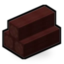
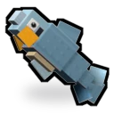
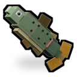

The Farm
The Farm: Gather materials by clearing lines.
Every clear gathers
Each clear gathers one kind of material.
A clear gathers one for each line, or as many as it would send, whichever is more.
Long combos add up to 3 more.
The longer your run lasts, the more you gather, up to 3 times as much.
What you gather
Build stations to find rarer materials, like Maple Logs and Mithril Ore.
What it gathers
 Oak Log
Oak Log Maple Log
Maple Log
Ipe Log Darkwood Log
Darkwood Log Iron Ore
Iron Ore Mithril Ore
Mithril Ore Adamantite Ore
Adamantite Ore Orichalcum Ore
Orichalcum Ore
Guppy
Trout Flax
Flax Cotton
Cotton Nettle
Nettle Lotus Leaves
Lotus Leaves Coal
Coal
The game's own guide: The Farm.
Gallery
Strategy
Not written yet
How to get the most out of The Farm.